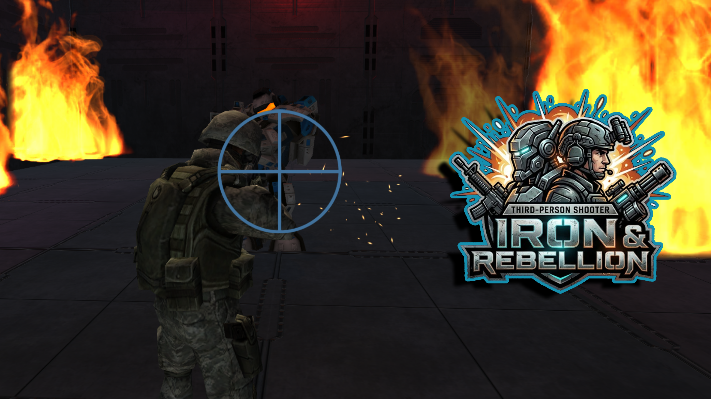

「潜入、殲滅。敵国兵器工場を掌握せよ。」
ゲームをプレイする / ダウンロード作品概要
本作は、緊迫感のある屋内戦をテーマにした3Dタクティカル・シューティングゲームです。
プレイヤーは特殊部隊員となり、最新兵器が製造される敵国の重要拠点へ単身潜入。数多の敵を退け、最深部に待ち構える巨大兵器の撃破を目指します。

Phase 01: 潜入・探索
ミニマップを頼りに、広大な工場内を索敵。敵の配置を把握する戦略性が求められます。

Phase 02: 敵軍掃討
派手な火花や爆発エフェクトを実装し、シューティングならではの爽快感を追求しました。

Phase 03: 最終決戦
巨大なHPバーと燃え盛る炎が彩るボスバトル。プレイヤーの技術が試されるラストシーンです。
2023年8月 〜 2026年X月（約Xヶ月）
使用ツール：
Unity / C# / Visual Studio
Unity / C# / Visual Studio
ジャンル：
サードパーソン・シューティングゲーム
サードパーソン・シューティングゲーム